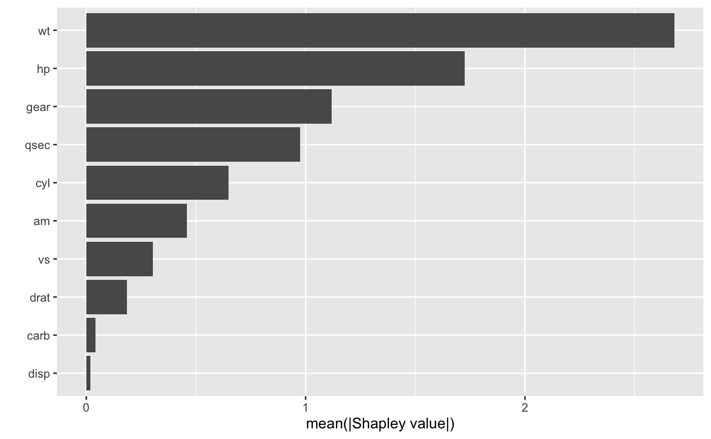
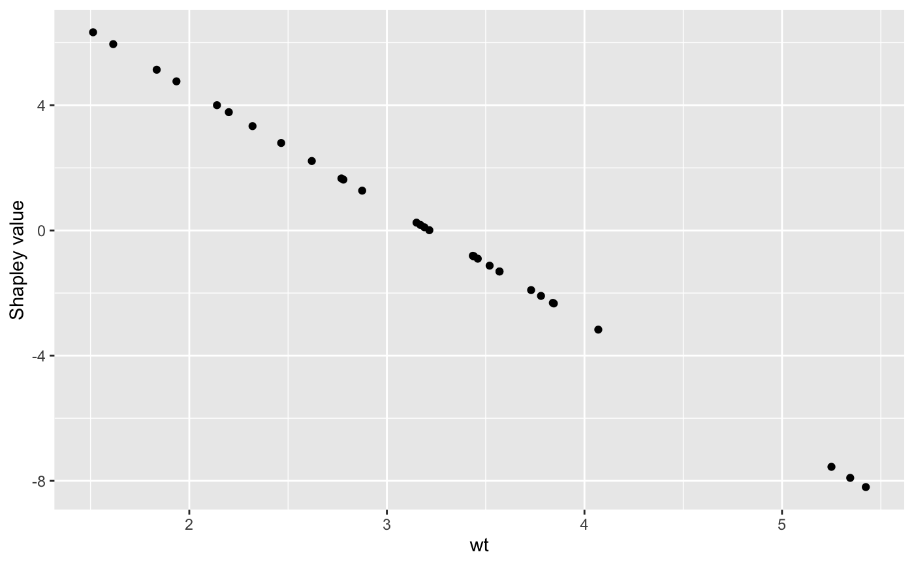
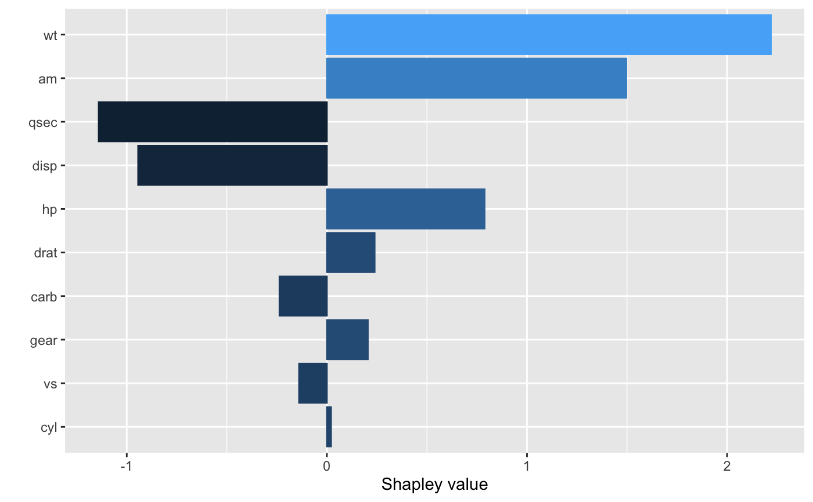

Compute fast (approximate) Shapley values for a set of features.
explain(object, ...) # S3 method for default explain( object, feature_names = NULL, X = NULL, nsim = 1, pred_wrapper = NULL, newdata = NULL, ... ) # S3 method for lm explain( object, feature_names = NULL, X, nsim = 1, pred_wrapper, newdata = NULL, exact = FALSE, ... ) # S3 method for xgb.Booster explain( object, feature_names = NULL, X = NULL, nsim = 1, pred_wrapper, newdata = NULL, exact = FALSE, ... )
| object | A fitted model object (e.g., a
|
|---|---|
| ... | Additional optional arguments to be passed onto
|
| feature_names | Character string giving the names of the predictor
variables (i.e., features) of interest. If |
| X | A matrix-like R object (e.g., a data frame or matrix) containing
ONLY the feature columns from the training data. NOTE: This argument
is required whenever |
| nsim | The number of Monte Carlo repetitions to use for estimating each Shapley value. Default is 1. |
| pred_wrapper | Prediction function that requires two arguments,
|
| newdata | A matrix-like R object (e.g., a data frame or matrix)
containing ONLY the feature columns for the observation(s) of interest.
Default is |
| exact | Logical indicating whether to compute exact Shapley values.
Currently only available for |
A tibble with one column for each feature specified in
feature_names (if feature_names = NULL, the default, there will
be one column for each feature in X) and one row for each observation
in newdata (if newdata = NULL, the default, there will be one
row for each observation in X).
Setting exact = TRUE with a linear model (i.e., an
lm or glm object) assumes that the
input features are independent.
You can find more examples (with larger and more realistic data sets) on the fastshap GitHub repository: https://github.com/bgreenwell/fastshap.
# # A projection pursuit regression (PPR) example # # Load the sample data; see ?datasets::mtcars for details data(mtcars) # Fit a projection pursuit regression model fit <- lm(mpg ~ ., data = mtcars) # Compute approximate Shapley values using 10 Monte Carlo simulations set.seed(101) # for reproducibility shap <- explain(fit, X = subset(mtcars, select = -mpg), nsim = 10, pred_wrapper = predict) shap#> # A tibble: 32 x 10 #> cyl disp hp drat wt qsec vs am gear carb #> <dbl> <dbl> <dbl> <dbl> <dbl> <dbl> <dbl> <dbl> <dbl> <dbl> #> 1 -0.0446 -0.747 0.629 0.0653 1.64 -0.755 -0.127 1.01 0.262 -0.299 #> 2 0.0446 -0.973 1.07 0.492 1.97 -1.55 -0.0953 1.76 0.0655 -0.239 #> 3 0.178 -1.40 1.20 0.327 3.64 -0.122 0.159 1.26 0.262 0.439 #> 4 0.0223 0.479 0.724 -0.380 0.251 1.81 0.159 -1.51 -0.524 0.379 #> 5 -0.178 1.01 -0.447 -0.310 -2.71 -0.580 -0.191 -1.01 -0.262 0.160 #> 6 0.0223 0.671 0.649 -0.746 -0.887 2.54 0.222 -0.756 -0.590 0.219 #> 7 -0.245 1.38 -1.47 -0.209 -1.36 -1.66 -0.191 -0.504 -0.524 -0.279 #> 8 0.156 -1.02 1.46 0.00630 0.364 2.62 0.127 -1.26 0.0655 0.0798 #> 9 0.201 -1.69 1.21 0.281 -1.04 4.29 0.159 -1.26 0.131 0.359 #> 10 0.0892 -0.394 0.509 0.188 -2.54 0.418 0.0953 -1.01 0.393 -0.339 #> # … with 22 more rows# Compute exact Shapley (i.e., LinearSHAP) values shap <- explain(fit, exact = TRUE) shap#> # A tibble: 32 x 10 #> cyl disp hp drat wt qsec vs am gear carb #> <dbl> <dbl> <dbl> <dbl> <dbl> <dbl> <dbl> <dbl> <dbl> <dbl> #> 1 0.0209 -0.943 0.788 0.239 2.22 -1.14 -0.139 1.50 0.205 -0.237 #> 2 0.0209 -0.943 0.788 0.239 1.27 -0.680 -0.139 1.50 0.205 -0.237 #> 3 0.244 -1.64 1.15 0.199 3.33 0.625 0.179 1.50 0.205 0.361 #> 4 0.0209 0.364 0.788 -0.407 0.00836 1.31 0.179 -1.02 -0.451 0.361 #> 5 -0.202 1.72 -0.608 -0.351 -0.828 -0.680 -0.139 -1.02 -0.451 0.162 #> 6 0.0209 -0.0763 0.896 -0.658 -0.902 1.95 0.179 -1.02 -0.451 0.361 #> 7 -0.202 1.72 -2.11 -0.304 -1.31 -1.65 -0.139 -1.02 -0.451 -0.237 #> 8 0.244 -1.12 1.82 0.0735 0.101 1.77 0.179 -1.02 0.205 0.162 #> 9 0.244 -1.20 1.11 0.255 0.250 4.15 0.179 -1.02 0.205 0.162 #> 10 0.0209 -0.842 0.509 0.255 -0.828 0.370 0.179 -1.02 0.205 -0.237 #> # … with 22 more rows